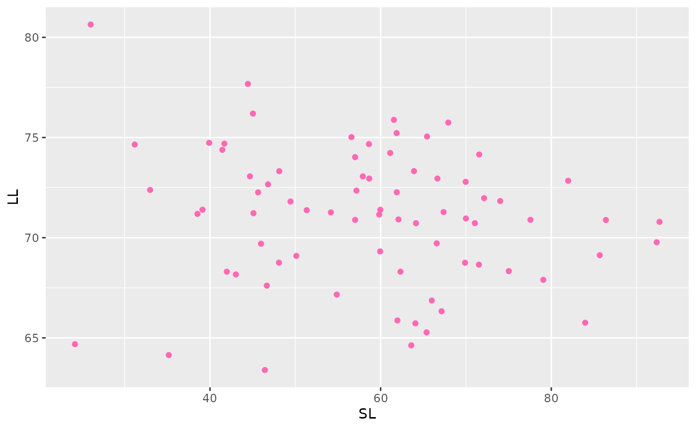

DarterTutorial.RmdThis package is used to analyze Darter data that has been collected in the southeastern United States.
How to install:
devtools::install_github("evanaselja/darter.pkg")## Using github PAT from envvar GITHUB_PAT## Downloading GitHub repo evanaselja/darter.pkg@HEAD##
## ── R CMD build ─────────────────────────────────────────────────────────────────
## * checking for file ‘/tmp/RtmpcNFHci/remotes2fca560a6148/evanaselja-darter.pkg-f4017e7/DESCRIPTION’ ... OK
## * preparing ‘vanaselja.pkg’:
## * checking DESCRIPTION meta-information ... OK
## * checking for LF line-endings in source and make files and shell scripts
## * checking for empty or unneeded directories
## * building ‘vanaselja.pkg_0.1.0.tar.gz’
## Warning: invalid uid value replaced by that for user 'nobody'## Installing package into '/tmp/RtmpzvM7VM/temp_libpath2e2a16149a5d'
## (as 'lib' is unspecified)##
## Attaching package: 'dplyr'## The following objects are masked from 'package:stats':
##
## filter, lag## The following objects are masked from 'package:base':
##
## intersect, setdiff, setequal, unionIn this tutorial we are using gutselli meristics data collected from Tennessee.
#install.packages("googlesheets4")
library(googlesheets4)
googlesheets4::gs4_deauth()
darter_data <- read_sheet("https://docs.google.com/spreadsheets/d/14Xv_bXq3fkIV_zHmRY6dwJZF735Ba9p5YJLQ2wDR0FA/edit?usp=sharing")## ✔ Reading from Copy of gutselli meristics.## ✔ Range Copy of newmanii_Lwr Pigeon-Little Rivr.This package requires ggplot2 and dplyr to be downloaded and added to the directory.
The package contains six functions to evaluate the data:
bar_graph(darter_data, "SL")
clean_data(darter_data)## # A tibble: 74 × 12
## Lot Specimen Sex SL LL TV CPD `Y/N` State County Drainage
## <chr> <dbl> <chr> <dbl> <dbl> <dbl> <dbl> <chr> <chr> <chr> <chr>
## 1 CU 24632 10 m 44.5 78 20 24 y TN Blount Little …
## 2 USNM 1908… 3 m 62.5 68 18 25 y TN Blount Little …
## 3 CU 24632 2 m 66.5 73 18 25 y TN Blount Little …
## 4 CU 41384 1 m 31 75 18 25 y TN Blount Little …
## 5 UMMZ 1315… 9 j 24 65 19 25 y TN Cocke Lwr Pig…
## 6 CU 37688 1 m 46.5 68 19 25 y TN Sevier Little …
## 7 UMMZ 1315… 1 m 79 68 19 25 y TN Cocke Lwr Pig…
## 8 CU 24632 7 m 49.5 72 19 25 y TN Blount Little …
## 9 UMMZ 1315… 3 f 72 72 19 25 y TN Cocke Lwr Pig…
## 10 CU 23457 7 m 39 71 18 26 y TN Sevier Little …
## # ℹ 64 more rows
## # ℹ 1 more variable: Group <chr>
filter_sexes(darter_data, Sex, "m")## # A tibble: 27 × 12
## Lot Specimen Sex SL LL TV CPD `Y/N` State County Drainage
## <chr> <dbl> <chr> <dbl> <dbl> <dbl> <dbl> <chr> <chr> <chr> <chr>
## 1 UMMZ 1315… 9 j 24 65 19 25 y TN Cocke Lwr Pig…
## 2 UMMZ 1315… 3 f 72 72 19 25 y TN Cocke Lwr Pig…
## 3 VPI 1543 2 f 86.5 71 18 26 y TN Sevier Little …
## 4 CU 24632 5 f 61.5 76 18 26 y TN Blount Little …
## 5 CU 41882 3 f 66 67 19 26 y TN Sevier Little …
## 6 USNM 1908… 9 f 45.5 72 19 26 y TN Blount Little …
## 7 USNM 1908… 5 f 61 74 19 26 y TN Blount Little …
## 8 USNM 1908… 11 f 41.5 74 19 26 y TN Blount Little …
## 9 UMMZ 1315… 8 j 26 81 19 26 y TN Cocke Lwr Pig…
## 10 CU 41882 2 f 64 71 20 26 y TN Sevier Little …
## # ℹ 17 more rows
## # ℹ 1 more variable: Group <chr>
linear_model(darter_data, "SL", "LL")##
## Call:
## lm(formula = as.formula(paste({
## {
## x
## }
## }, "~", {
## {
## y
## }
## })), data = .)
##
## Residuals:
## Min 1Q Median 3Q Max
## -38.567 -11.451 1.396 9.579 33.973
##
## Coefficients:
## Estimate Std. Error t value Pr(>|t|)
## (Intercept) 106.3274 36.5306 2.911 0.0048 **
## LL -0.6732 0.5136 -1.311 0.1941
## ---
## Signif. codes: 0 '***' 0.001 '**' 0.01 '*' 0.05 '.' 0.1 ' ' 1
##
## Residual standard error: 14.97 on 72 degrees of freedom
## Multiple R-squared: 0.02331, Adjusted R-squared: 0.00974
## F-statistic: 1.718 on 1 and 72 DF, p-value: 0.1941
plot_data(darter_data, "SL", "LL")
summarize_value(darter_data, SL, Sex)## # A tibble: 3 × 2
## Sex mean_var
## <chr> <dbl>
## 1 f 63.6
## 2 j 25
## 3 m 57.2